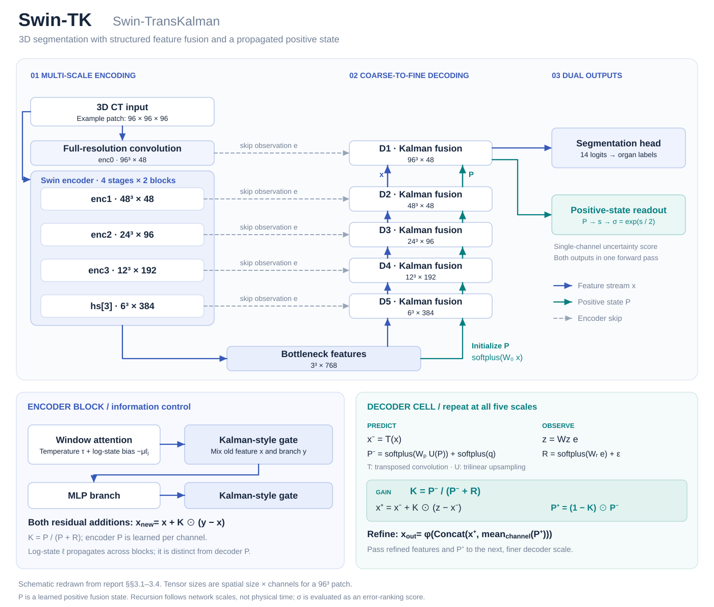
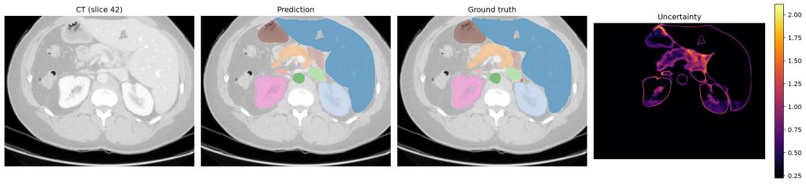

Research highlight專題重點
Learn how much to trust each scale during feature fusion, and reuse the propagated state to flag regions more likely to contain segmentation errors.
在多尺度融合時學習各來源的採用比例，再利用傳遞狀態產生不確定度圖，協助辨識較容易分割錯誤的區域。
Project abstract專題摘要
Swin-TransKalman (Swin-TK) extends SwinUNETR by expressing coarse-to-fine decoding as prediction and update steps. A learned positive state and observation noise determine element-wise fusion gains, while the updated state is propagated through the decoder and read out as voxel-level uncertainty. Encoder gates, attention temperature, and a log-state bias further regulate feature updates. Five-fold internal cross-validation on 50 labeled FLARE22 training CT scans covers 13 abdominal organs, using 40 training and 10 validation cases per fold for 1,000 epochs. The complete Swin-TK configuration improves DSC from 0.8649 to 0.8755 and NSD from 0.8917 to 0.9063; it also includes deep supervision and an uncertainty loss. Uncertainty achieves an error-ranking AUROC of 0.776 ± 0.039, compared with 0.609 ± 0.041 for image gradients.
Swin-TransKalman（Swin-TK）以 SwinUNETR 為基礎，將由粗至細的解碼表述為預測與更新。模型利用可學習正值狀態與觀測雜訊形成逐元素融合增益，並持續傳遞更新狀態，最後讀出逐體素不確定度；編碼器另整合卡爾曼式閘門、注意力溫度與對數狀態偏置。於 FLARE22 的 50 例標註 CT 進行五折內部交叉驗證，每折 40 例訓練、10 例驗證、1,000 epochs，分割 13 類腹部器官。包含深監督與不確定度損失的完整配置，將 DSC 由 0.8649 提升至 0.8755，NSD 由 0.8917 提升至 0.9063；不確定度的錯誤排序 AUROC 為 0.776 ± 0.039，高於影像梯度的 0.609 ± 0.041。
Method方法設計
Kalman-style feature fusion卡爾曼式特徵融合
Use positive states and observation noise to form element-wise gains for combining decoder predictions with encoder skip features.
利用正值狀態與觀測雜訊形成逐元素增益，融合解碼預測與編碼跳接特徵。
Encoder information control編碼器資訊調節
Integrate Kalman-style gates, attention-temperature control, and a log-state bias in the hierarchical encoder.
在階層式編碼器中整合卡爾曼式閘門、注意力溫度調節與對數狀態偏置。
Segmentation and uncertainty outputs分割與不確定度雙輸出
Read out voxel-level uncertainty from the propagated state and evaluate its ability to rank erroneous voxels.
由持續傳遞的狀態讀出逐體素不確定度，並評估其對錯誤體素的排序能力。

Representative results代表成果
Five-fold internal cross-validation on 50 labeled FLARE22 training cases. Both models use 1,000 epochs; the complete Swin-TK configuration also adds deep supervision and an uncertainty loss.
FLARE22 的 50 例標註訓練資料、五折內部交叉驗證。兩模型皆訓練 1,000 epochs；完整 Swin-TK 另加入深監督與不確定度損失。
| Metric指標 | SwinUNETRSwinUNETR | Swin-TKSwin-TK |
|---|---|---|
| Mean DSC平均 DSC | 0.8649 | 0.8755 |
| Mean NSD平均 NSD | 0.8917 | 0.9063 |
| Parameters參數量 | 62.2 M | 63.6 M |
Report Table 10. DSC uses the main cross-validation summary; NSD uses the surface-evaluation pipeline. Improvements are +1.06 and +1.46 percentage points, respectively.
取自報告表 10。DSC 採主交叉驗證彙總，NSD 採表面評估流程；分別改善 1.06 與 1.46 個百分點。
View source tables →查看原始表格 →The main DSC comparison improves in all five folds and in 39 of 50 cases. A supplemental fold-1 comparison without deep supervision in either model raises DSC from 0.8706 to 0.8769. The uncertainty AUROC measures error ranking; it is not evidence of probability calibration.
主 DSC 評估中，五折皆改善，50 例中有 39 例進步。第 1 折補充比較在兩模型皆未使用深監督時，DSC 仍由 0.8706 提升至 0.8769。不確定度 AUROC 衡量錯誤排序能力，不代表已完成機率校準。

Interpretation & scope成果解讀與適用範圍
The main experiment compares complete configurations, so the gain cannot be assigned to one module alone. Single-fold ablation does not replace full module ablations, multi-seed training, or external validation. The uncertainty output has demonstrated ranking utility under this protocol, not calibrated error probabilities.
主實驗比較完整配置，增益不能全數歸於單一模組。單折消融尚不能取代完整模組消融、多種子訓練及外部驗證。不確定度輸出在目前流程下具錯誤排序能力，尚未驗證其機率校準。
Full report & evidence完整報告與對應證據
The summary and figures on this page are drawn from the project report. The full report is in Traditional Chinese; page links below use the PDF page number.
本頁摘要與圖表整理自專題報告。完整報告為繁體中文；下列連結使用 PDF 檔案頁碼。
- Table 10 · Main comparison表 10：主要比較PDF p. 33PDF 第 33 頁
- Table 15 · Deep-supervision comparison表 15：深監督補充比較PDF p. 39PDF 第 39 頁
- Table 16 · Uncertainty evaluation表 16：不確定度評估PDF p. 40PDF 第 40 頁